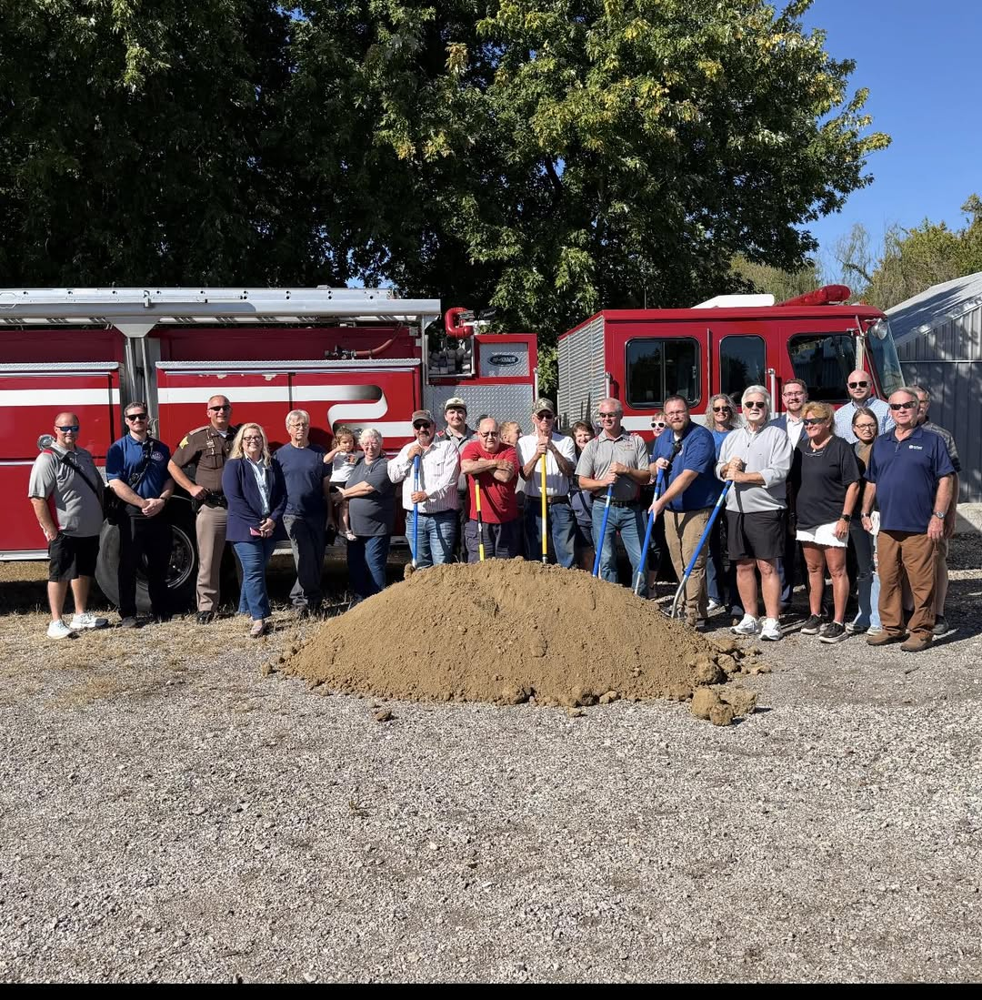

Community Spotlight
A Big Step for Our Community!
October 8, 2026

Community Outreach Ministry groundbreaking — October 8, 2026
The Community Outreach Ministry is breaking ground on a new building that will benefit not only the Skelton-Owen Fire Territory, but also everyone in Skelton Township and the Town of Tennyson.
This new facility will provide additional space to store essential fire and public safety supplies, helping our community establish a true emergency shelter and better prepare to respond to disasters and other emergencies.
The facility will also house a food bank and emergency personal items needed for those displaced by fire, flood, and other disasters.
This is about more than just a building. It's about preparedness, safety, and making sure our community has the resources needed to help our residents when they need it most.
A stronger, safer, and better-prepared community benefits us all!